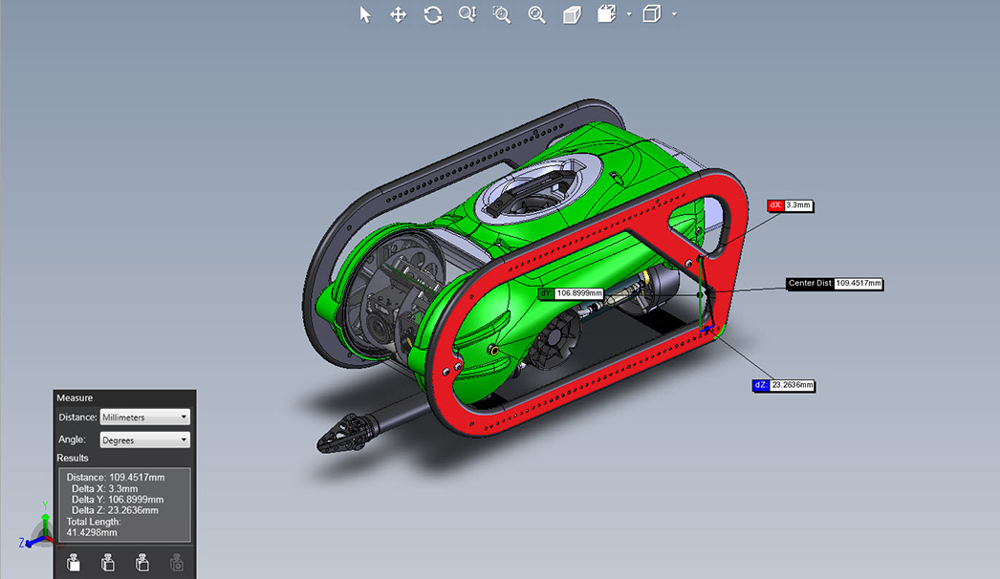
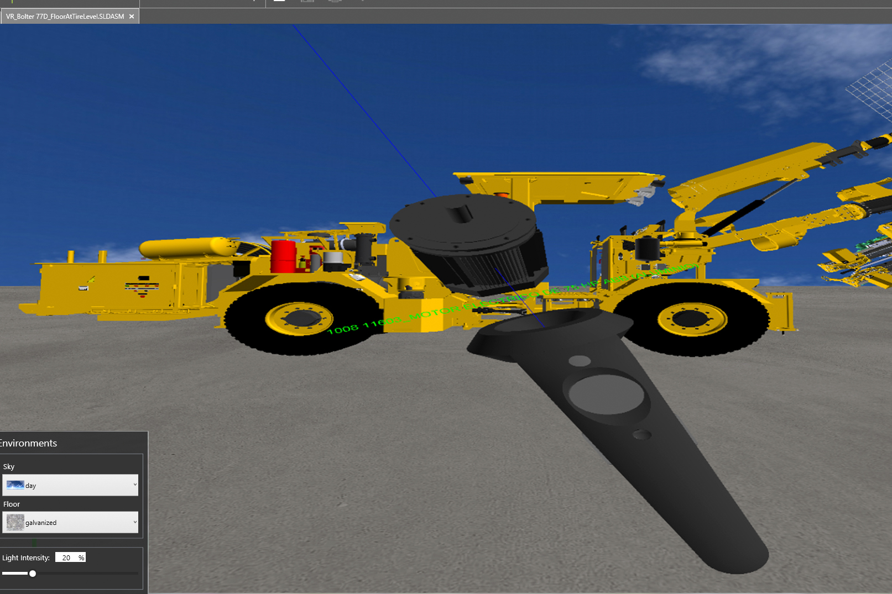

用 eDrawings 两年，从觉得它多余到每天离不开
当初装它只是因为同事发的 CAD 文件打不开，两年下来发现这款免费查看器的稳定和克制远超预期，也踩过不少只有长期用才会暴露的坑。
装 eDrawings 的起因很简单——同事发来的 .SLDASM 装配体文件我电脑上没装 SOLIDWORKS，双击没反应。搜了一圈说这是 SolidWorks 自家的查看器，去edrawings官网确认了一下，官方出品、免费、能打开的格式也多，就顺手装了。那时候对它没抱什么期待，觉得就是个"能看就行"的工具，看完就卸的那种。现在两年多过去了，它还在我桌面上，而且是少数几个开机就挂在任务栏里的软件之一。
越用越顺手的，是它的"不动脑子"
刚开始用的时候觉得它太克制——界面上能点的按钮比我想象的少，很多功能藏在右键菜单或者窗格里。但用了一段时间发现，这恰恰是它最让人安心的地方：你拿到一个文件，不用想"我该不该开个工程图模式"或者"要不要选装配体配置"，打开就是图形，滚轮放大、中键旋转、Ctrl+中键平移，这一套操作从桌面到触屏到手机，逻辑几乎没变过。
有件事印象特别深。半年前我换了一台新笔记本，去官方下载拿了安装包装完，第一件事是把之前的配置搬过来——结果发现根本不用搬。它的快捷键方案、窗格布局、默认测量单位，这些东西居然没存在某个我得手动导出的配置文件里，而是跟着账号或者跟着安装包就自然带过来了。我甚至不确定它有没有配置文件这个概念，反正新机器打开后跟旧机器上一模一样。这种"不折腾"的感觉，在现在这个连截图工具都要同步主题的时代，反而成了稀缺品。

越用越烦的，也是它的"不动脑子"
当然，克制过了头就是死板。最让我头疼的是那个版本水印——当装配体里某个零件的图形数据落后于建模软件后来的修改时，它会在整个窗口上铺一层淡淡的水印。理论上这是个贴心提醒，但实际上只要发文件的人忘了重建一次，我每次打开都要面对这层东西。右键图形区可以选"仅对此文档隐藏"，但每个文件都要单独设一次。我至今没找到全局关闭的开关，去edrawings文档翻了一圈也没提过——也许专业版有？但免费版用户就只能忍着。
还有件事让我觉得它不够聪明。发件人那边如果是用 Creo 家族的零件表，但没附带 XPR/XAS 加速器文件，eDrawings 打开后结果就不对。这个问题不是每次都能复现，有时候打开正常，有时候显示的零件数量就少了那么一两个。排查起来特别费时间——得一个个问"你是不是用了 Creo？有没有附带加速器文件？"文档里确实写了这个限制，但作为一个"能打开就行"的查看器，我还是希望它能给个更明确的错误提示，而不是静默地少显示几个零件。
每天离不开的，是爆炸视图和剖面
如果说缩放旋转平移是所有看图工具的标配，那爆炸视图和剖面就是 eDrawings 真正让我离不开的东西。拿到大装配体，先缩放到 fits 看整体，然后打开爆炸视图窗格，拖一下滑块——零件沿着装配关系"哗"地拉开，谁装在谁上面、中间隔了什么垫片，一眼就清了。这个功能在采购核件数的时候特别好用，我拿着爆炸视图的截图跟供应商对清单，比对着 BOM 表高效多了。
最妙的是爆炸状态下所有工具都照常可用：边拉开边量间隙、边旋转边看背面。专业版还能在爆炸状态下移动挡路的零部件，把某个遮住视线的外壳先挪开再仔细看里面的结构。我用的是免费版，移动不了，但可以从零部件窗格里把挡路的件隐藏掉，够用。

碰都没再碰的，是那些我以为会用到的功能
当初装的时候看到功能列表里有 AR 模式、有测量工具、有标记批注，想着"以后评审的时候肯定能用得上"。结果两年下来，AR 模式只在刚装那两天对着手机玩了五分钟就再也没开过——实际工作里拿着手机对着电脑屏幕看模型这件事，想象中很酷，实操中不如直接在桌面上转一圈来得快。
测量工具倒是偶尔用，但每次都得从窗格里调出来，不如我在建模软件里用得顺手。标记批注更惨——公司里评审走的是在线协作文档，没人在 CAD 文件里直接画批注了。所以这两个功能对我来说等于不存在，但它们又确实装在那里，占着菜单的位置。
时间让我修正的判断
刚装的时候我觉得 eDrawings 就是个"能看就行"的免费替代品，迟早会被功能更全的软件取代。现在反而觉得它的定位特别清晰——它不抢建模软件的活，不做在线协作，不搞云端同步，就专心做一件事：让别人发给你的 CAD 文件能最快地打开、看清、转一圈。
我高估了它的扩展性——以为免费版只是阉割版，升级专业版就能解锁更多玩法。但实际用下来，免费版能覆盖的场景已经是我日常工作的 90%。剩下那 10% 需要专业版功能的时刻，一年也碰不到一两次。
我也低估了它的稳定性。两年里它崩过吗？好像没有。文件打不开的情况有，但那几乎都是源文件本身有问题——格式不支持、传输截断、版本太新——而不是 eDrawings 自己的 bug。这对一个免费工具来说，是最难能可贵的品质。
去留结论
不会卸载。eDrawings 在我电脑上的角色，已经从一个"看完就卸的临时工具"变成了一个"别人发 CAD 文件我第一反应就是用它打开"的默认选择。它不是功能最强的，也不是界面最现代的，但它够稳、够快、够不折腾。
如果有一天我需要频繁地在 CAD 文件里画批注、做测量、输出工程图，那我可能会考虑换一个功能更全的方案——但那应该是我工作内容变了，而不是 eDrawings 不够用了。在此之前，它继续安静地待在任务栏里，滚轮转一下、中键拖一下、滑块拉一下，就这样。官方那边一直更新得稳，不过我还是习惯在GitHub、Gitee、GitCode都留一份备份，多一份渠道总是踏实些。